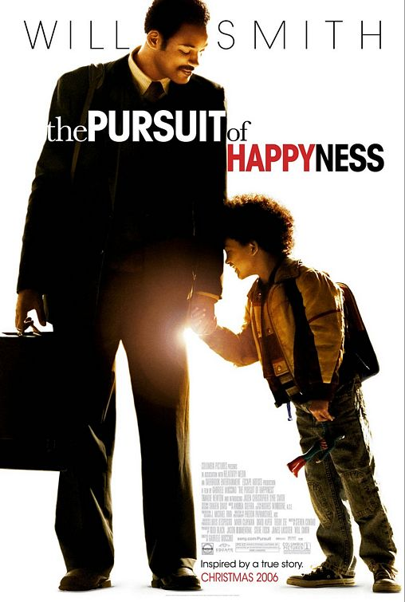
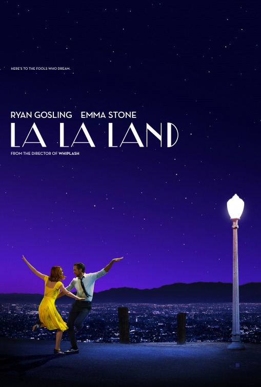

Movie Fun Facts
Check out these fun facts about your favorite movies:
The Pursuit of Happyness

- The real Chris Gardner, whose life the film is based on, actually scored an impressive 88% on his
Dean Witter training exam, which is a formal, structured training program for account executives.
Even though in reality, the program accepted most people who passed the test.
(source)
- Gardner invested his life savings in portable bone density scanners, which he struggled to sell
throughout the film. These devices were only a slight improvement over standard X-rays and were
very costly, making them difficult to sell. (source)
- In the film, Gardner claims he was good at maths in school, which he believed would help him in
the stockbroker world, despite not having a college education. He was top of his class in high
school (even though his graduating class only had 12 students) and he waw also first in his Navy
class of 20. (source)
Inside Out

- Riley's Bay Area Skills Camp jersey has the number 15, referencing that "Inside Out" was Pixar's
15th film. (source)
- The movie's director, Pete Docter, said each emotion is based on a shape: Joy is a star, Sadness
is a teardrop, Anger is a fire brick, Fear is a raw nerve, and Disgust is broccoli. (source)
- The writers collected up to 27 emotions to use but settled on the main five which are Joy,
Sadness, Disgust, Fear, and Anger, to make it less complicated. Some primary emotions that were cut
was Surprise, Pride, and Trust. (source)
La La Land

- Ryan Gosling played all his piano parts in the film himself - he practiced two hours a day, six
days a week to prepare, impressing his co-star John Legend with his rapid progress. (source)
- Emma Watson and Miles Teller were originally considered for the lead roles, but Watson turned the
part down for "Beauty and the Beast," and Teller's contract negotiations fell through, leading to
Emma Stone and Ryan Gosling being cast. (source)
- The scene where Mia's audition is interrupted by a casting director was inspired by a real
experience that Ryan Gosling had. (source)
Forrest Gump

- Tom Hanks modeled Forrest's accent on the real-life accent of Michael Connor Humphreys, who played
young Forrest in the film. (source)
- With each transition of Forrest's age, the first scene of every new stage will always show him
dressed in a blue plaid shirt. (source)
- The Bubba Gump Shrimp Co. restaurant, created by the film, is now a themed restaurant that has 33
locations worldwide, including in the U.S., UK, Japan, and more. (source)
Coco

- Miguel's character was originally only going to play guitar and not sing. However, when director
Lee Unkrich discovered that Anthony Gonzalez, the voice actor for Miguel, was a talented singer,
the filmmakers decided to have Miguel sing to showcase Anthony's talent in the film. (source)
- The film contains specific themes and content which would supposedly be banned in China, but the
members of Chinese censor board were so touched by the film that they made an exception and allowed
these parts to show. (source)
- The film spent more days #1 at the box office than any other animated film in the 21st century. (source)